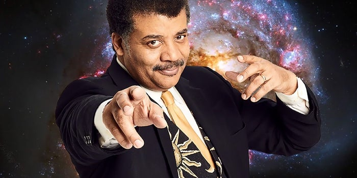

by Anthony
Postado em 1 de Janeiro, de 2019 às 12:00
Neil deGrasse Tyson é um divulgador científico, escritor e astrofísico americano. Tyson é o diretor do Planetário Hayden no Centro Rose para a Terra e o Espaço e investigador associado do departamento de astrofísica no Museu Americano de História Natural. Tyson investiga formação e evolução estelar, como também cosmologia e astronomia galáctica. Já ocupou vários cargos em instituições como a Universidade de Maryland, Universidade de Princeton, o Museu Americano de História Natural e o Planetário Hayden. De 2006 a 2011 foi apresentador do programa de televisão de educação científica NOVA scienceNOW, no canal de televisão PBS.
É um convidado frequente dos programas The Daily Show, The Colbert Report, Real Time with Bill Maher e Jeopardy!. Em 2014 apresentou a série Cosmos: A Spacetime Odyssey. É autor de vários livros sobre astronomia. Em 1995 começou a escrever a coluna "Universe" para a revista Natural History. Nesta coluna, em 2002, introduziu a expressão "Manhattanhenge" para descrever dois solstícios que ocorrem duas vez por ano na cidade de Manhattan. O sol da tarde fica alinhado com duas das principais ruas da grelha de Manhattan, permitindo que se observe o pôr-do-sol sem qualquer obstrução. Esta coluna influenciou também o seu trabalho como professor nas palestras da coleção The Great Courses.
Em 2001, o então presidente dos Estados Unidos, George W. Bush, nomeou-o para fazer parte da Comissão para o Futuro da Indústria Aeroespacial dos Estados Unidos e, em 2004, da Comissão do Presidente para a Implementação da Política de Exploração Espacial do Estados Unidos, esta última também ficou conhecida como a Comissão da "Lua, Marte e mais além". Pouco mais tarde foi galardoado com a Medalha NASA por Serviço Público de Destaque, a mais alta distinção civil conferida pela NASA. Em 2004 foi apresentador do programa de televisão Origins, uma minissérie de quatro episódios, transmitida pela Nova da PBS.
Como diretor do Planetario de Hayden, opôs-se ao pensamento tradicional que se referia a Plutão como o nono planeta. Tyson explicou que queria ver as semelhanças entre objetos, agrupando os planetas terrestres, os planetas gigantes gasosos e Plutão, com objetos que lhe eram semelhantes, evitando que se contasse simplesmente os planetas. Declarou no Colbert Report, no Daily Show e no Horizon que esta decisão deu origem a uma grande quantidade de mensagens de ódio, muitas das quais de crianças. Em 2006, a I.A.U. confirmou esta avaliação ao mudar a classificação de Plutão para "planeta anão".
Não há vergonha em não saber. O problema surge quando o pensamento e a conduta irracional, se encarregam de preencher o vazio deixado pela ignorância.